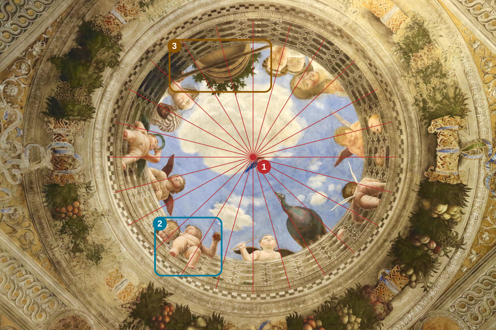

A Painted Ceiling, an Open Sky
The sky, balustrade and figures are painted. Yet three effects combine to make us believe that an opening exists above our heads.

Photograph: Gonzaloferjar / Wikimedia Commons — CC BY-SA 4.0. Educational guides added for Regarder l’Art — CC BY-SA 4.0.
1 — The balustrade: a ceiling opening onto the sky
The red dot and radiating lines help us read the oculus as a structure organised around a centre. Look at the small balusters: seen from below, they give the painted opening depth. The ceiling seems to extend towards the sky. The rays are a visual guide, not an exact geometric reconstruction of the fresco.
2 — Foreshortened bodies: looking from below
Inside the blue frame, the putto is seen from the feet upwards. His legs and belly appear compressed, while his head recedes behind them. His body has not become shorter: its length extends into depth. This is foreshortening, which makes us feel that we are standing beneath these figures.
3 — The vessel: a precarious balance
Inside the ochre frame, look at the underside of the large vessel and the slanting rod beneath it. The container seems to rest between the balustrade and this support. Its visible underside and overhanging position strengthen the illusion: we might almost worry that it could fall into the room!